SI 649 Communication Vis - Interactive
Hsin-Yuan Wu
- The viewers will recognize Norway won the most medals, not only in 2018 but also accumulatively.
- The viewers would capture what sports Norwagian and the US won the most medals and how the medals were more like in certain disciplines.
- The viewers might identify that Norway, who won the most medals, has the highest human development index.
- The US is not even in the top 10 countries who have the higher human development index, which is relevant to a long and healthy life, the ability to acquire knowledge, and a decent standard of living. With highly human social development, Norway might have some good policies for the athletes.
- When I started to do the interactive visualization, I took out my static graph and checked if I can use the interaction to enhance the communication.
- Instead of modifying the plot following the reading flow, I started from the one which might include more data. Thus, I started from the graph of “How many medals did these countries win in the past?”
- 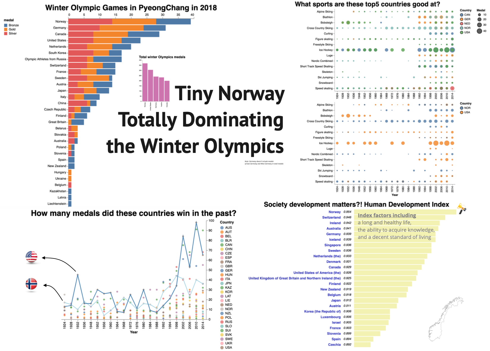
- In the static version, I only put the connections for the US and Norway. However, in the interaction version, we could easily make it easy. This was my first attempt.
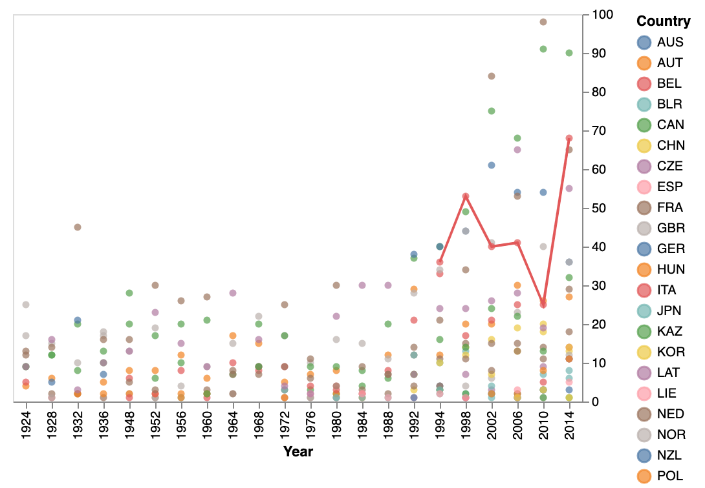
- When mouseover on the points, the connection would be created automatically followed by the color of the country. Since connection could make viewers have the perception of groups, I think this is important to make a line for conveying the trend and past. Then, I thought if we could offer more details for the medals, that would be great. Hence, I decided to add another graph for gold/silver/brownz amounts. While readers are interested in a specific country, we would show not only the total medals they won but also the gold/silver/bronze quantity by years.
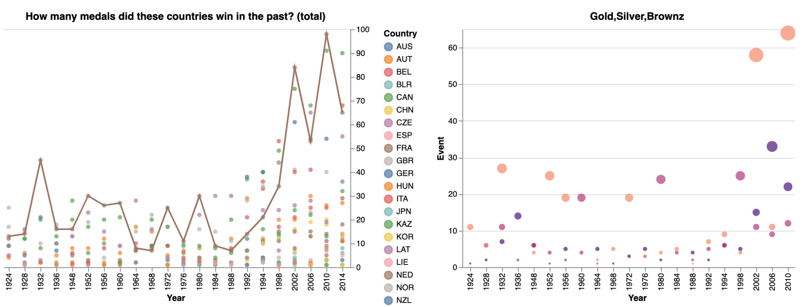
- Later, I thought it would be better to use the radio button for readers to select the country. Then, instead of using the mouseover, I turned the interaction into a radio button as follows.
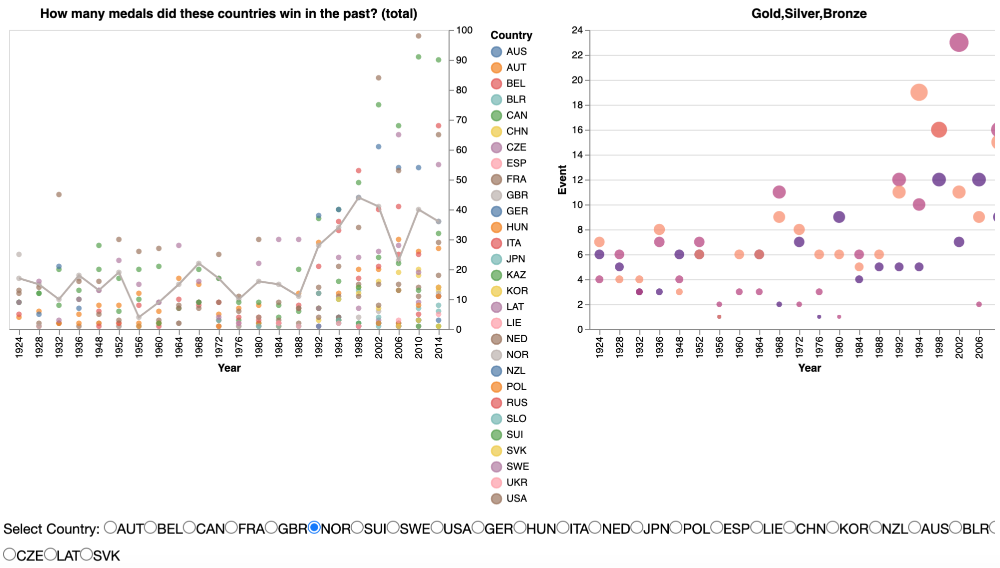
- However, after a couple days later when I revisited this chart, I thought I should make the right chart shorter in height so that the readers might not perceive the y-axis as the same/shared scale. And it becomes the following graph.
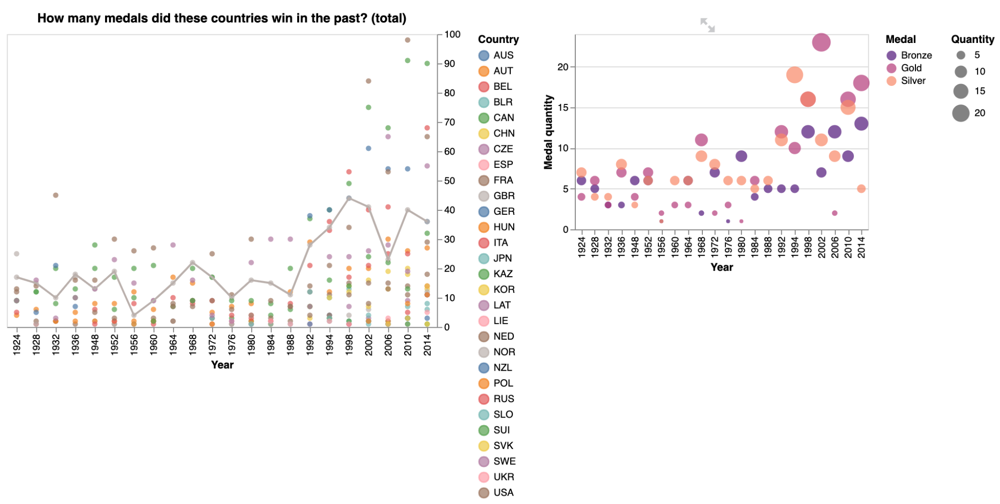
- Next, I would like to make the chart of sport disciplines more informative. I was thinking that although it is clear using the size to represent the medal quantities the countries won each year, yet to make it even more crystal clear I added the highlight when mouseover to the point. And this is my first version.
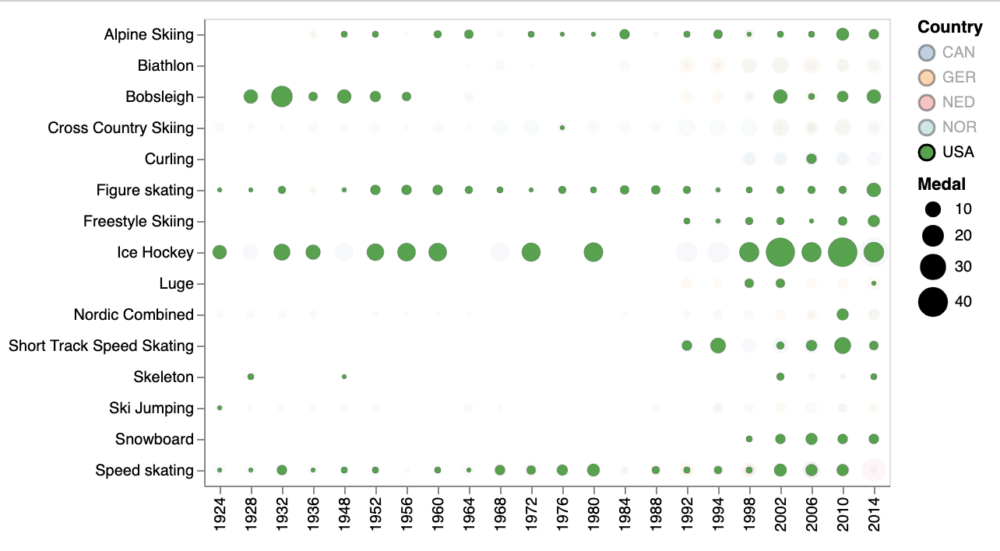
- However, I found that if I could add a bar chart to indicate the details after the mouseover, readers might be even more intuitively understand what sport the country was good at. So I added the interactive bar chart next to this point chart. I think even the point size could indicate the medal quantity, but it is still useful and intuitive for readers to have a bar chart and stack all medals separated colors by disciplines.
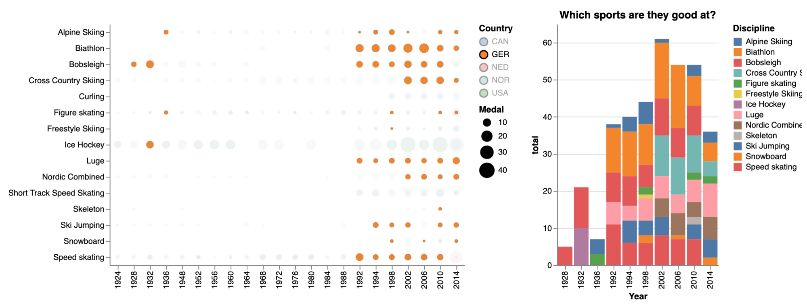
- After receiving comments from GSI, I made several modifications on my static version.
- First, I plot the 2018 Olympics medals records with the limited colors, basically using the blues with the gradient ones and stacking them in terms of Gold/Silver/Bronze. This could avoid readers’ perception of the linkage between types of medals and color representation. Also, I removed the color for the total medals, instead I used black and grey since I only want to emphasize that Norway won the most in total. Besides, to avoid using different colors to represent different countries, I limited the colors in the graph too. I reduce the connections between countries and color usage overall so as to diminish the confusions.
- Next, I removed most of the countries from the point chart of medals won in the past, which I only included the 2018 top 5 countries here. Also, since the key takeaway from this graph would be “Norway won more medals than Us not just one time for luck”, so I added the blurb to convey this information. For colors, I used much obvious colors for Norway and the US, which are dark blue and blue, and less obvious ones for the rest.
- For the sport disciplines chart, I decided to limit only the comparison of the US and Norway since the purpose here would be to find out how they won their medals. And I found out that using the heatmap seems better to depict the difference, so I changed the charts in this version. Along with the heatmap, I added a couple of sentences to describe that the US and Norway are basically good at different fields.
- Last, for the HDI plot, I use the similar color scheme in this graph and marked those 5 countries as steel blue bars. Since this is intended to be a consideration perspective of higher social development and higher sport development (though this claim is kind of broad), I added a text blurb to depict the clam and try to lead to more investigation for future research.
- Thus, the latest version is as follows.

- Then, for Interactive visualization, instead using my earlier attempts, I based on my latest static visualization and considered how to convey my information/claim more effectively. First, I think I should separate some data into subcategories, like elaborating more. For example, I put the total medals countries won into the sub category of the 2018 game, since I will show the top 5 countries in 2018, not in total. Next, I put the total medals countries won as the subset of the top 5 countries won in the past for readers to explore. For sport discipline comparison, I compared the US versus Norway and put the comparison of the top 5 countries under this. Last, besides the latest HDI index bar chart, I plotted HDI after 2000 for the top 5 countries under this barchart as a subset. Basically, key information I want to convey would be shown directly without exploring or unfolding.
- On the first bar chart of 2018 Winter Olympics, I added the tooltips for medal type amounts when mouseover to make it even clearer.
- On the graph of How many medals did these countries win in the past? (Norway vs USA), I added the tooltip for the points, in case readers would be interested in the details. Under this graph, there is an option to unfold to explore more countries won in the past. By selecting the dropdown box, graphs would indicate the trend line and the medal types details.
- Next section is Expertise sports, attempting to indicate the discipline comparison between Norway and USA, I added a sliding box frame/bounding box. When mouseover to the heatmap, it makes the comparison easier. Under this main comparison, I put the comparison of all top 5 countries under and folded as a subset. In this subsection, the five heatmaps are like Small Multiples. With the sliding bounding box, readers could easily compare across those countries.
- The last section is “Society development matters?!”, basically it is more important to add the text to deliver my claim, so I used more words under this section to convey my conclusion. Also, other than the bar chart, I added a subset of HDI of the top 5 countries since 2000 under the bar chart. Readers could unfold and make reference if interested.
- Then, I deployed my visualization by streamlit via Heroku.
- Due diligence/competitive analysis
- In the beginning, when I dealt with the data I have, I tried to think which chart I could use for inspiration. Then, I tried some bar charts first. Most of the time, I was pretty much looking at what Altair can do and tried to plot my data with those charts,actually. (I was kind of picking the charts from the following to fit my data.)
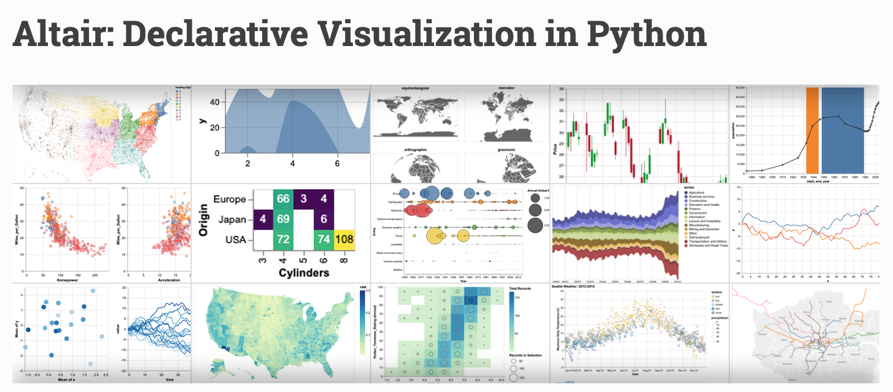.
- As for the latest version of comparison the sports disciplines between Norway and USA, originally I used the circle charts with color and size to convey the information of whether there are differences between expertised sports between Norway and the US. However, it seems that it is not so clear to find the pattern. So I revisited the Altair charts that I could use and when I saw the heatmap with the numbers on it, I think this could be more intuitive for the reader, than the size of circles as well as the dark/light color. Thus, I turned the comparison graph into the heatmap. This is the Altair document that inspired me, though it cannot to be said this is the professional solution.
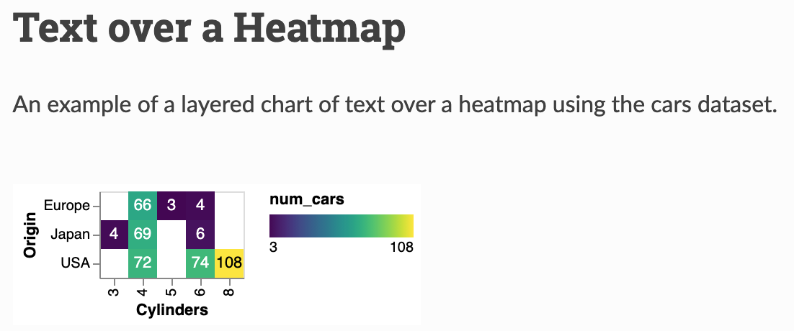
- Later, when I searched for development data, I found something in the website of www.statista.com. On this website, I found they are using lots of bar charts. Most of the time they separate the topics and show the data separately, instead of aggregating them. However, I think this is actually easier for readers to dig in what they are looking for or interested in. For the Human development index, they use the color encoding to mark on the maps as well as list the index as a table as follows. With this reference, I think I don’t have to use the map, since I’m more focused on the top 1, Norway, as well as the US. So I decided to use the most familiar bar chart to deliver the development extent.
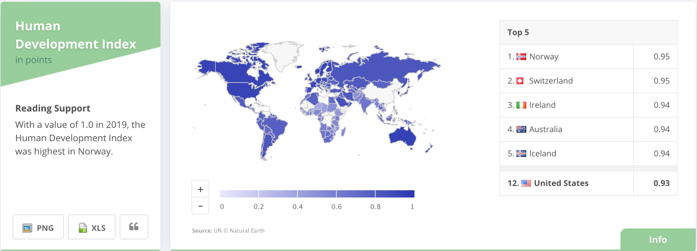
- Besides, when I searched for the Human Development Index, I found the graph like the following visualization.[3] This is a visualization, with some not complicated interactive options. Although it seems to have too many colors/lines for countries, they are grouped by their ranks, which is what I like in this graph. Thus, there is the trend we could find in the graph. Also, they use the hovering on to show the specific country and the tooltip for the data, which makes the graph more readable.
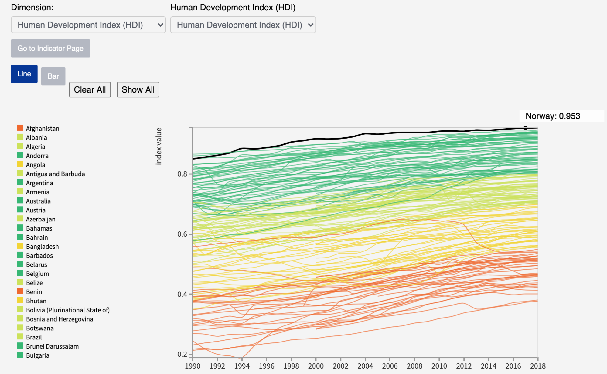
- To do the competitive analysis, I focused on Norway as well as the top 5 countries, instead of the development trends across all countries. I think if I used this trend line chart, readers might be distracted by the inclusion of so many countries. On the other hand, the inference I want to make in my visualization is to highlight and lead viewers to consider the relationship between the development and the sports development. Hence, I think it is better to use a simple bar chart for the latest index like what I did.
- However, in my interactive version, I did have the space to include the trend lines as the graph to let readers make reference. Nonetheless, since I’m more focused on the 2018 top 5 countries, I only plot the recent decade HDI on those countries. With this graph as reference, I also use a similar technique to thicken the line when hovering on the line in the graph.
- As for the interaction in my heatmaps, the sliding bounding boxes are inspired by the homework6, Visualization 2: Irish Pride vs. Money Team. In that vis, the x axis is time and the sliding line makes the comparison so easy and clear. Therefore, when I tried to compare the sport expertise, I think this is a good technique to indicate the comparison.

- Why do you think your final design is good? You should explicitly connect to principles you learned in class (design, perception, cognition, interaction, etc.)
- Labeling/Annotation: in my graph, we have some annotations, including legends and titles of axis and graphs. I think the labels should be clear and safe not to cause some confusion by readers.
- Focus on data: in my graph, I ensure to focus on the data so I only add a map of Norway as a decoration.
- Proportionality:
- The plot of 2018 medals is a bar chart, which is basically using the proportional length.
- In the visualization of sport disciplines, we use the heatmap with the figures labeled and used the color for the medal quantity. It should be clear and not confusing by the portionality.
- Limit retinal variables: I avoided using multi-dimensions to represent the data, since it is not necessary for my data. Among the plots, visualization of sports discipline is the one which has more elements, country/medal/year/discipline. However, this is still limited and could be easily demonstrated in the 2D graph.
- Avoid Chartjunk: I added a map contour for decoration and kind of emphasize Norway. However, it is just a small portion of the visualization.
- Data density of graphic: in my visualization, I tried to focus on simplified and familiar graphs to represent the data. Also, the data I’m using are essentially the Olympic results, so I think there should be no redundant graph with less information.
- In my design, I’m not using complicated designs like different areas, texture or shape to convey the information, since the topic is mainly based on the winter Olympics games. Essentially, people would tend to be familiar with the bar chart to indicate how many medals countries won. Also, I think with the bars sorted descending by medals would make viewers read from the top countries.
- For the medals countries won in the past, I chose points with limited color codes to indicate the games results for top 5 countries only and I also marked two lines, one for Norway and one for the US, for we are trying to convey the comparison between these two countries. For viewers’ perception and cognition, connecting a line among many points could help to understand the targets we want to highlight. (In theory, viewers could perceive a line here, as a group, which is kind of the principle of connection.) Besides, this would not make the plot complicated, but clear and fast to observe the medals.
- As for the chart with sport disciplines, I used the heatmap with medal amounts labeled and gradient colors to show the amount differences. Since I marked the medal quantity directly, I think this might be pretty straightforward for readers to perceive the differences.
- For the chart of human development, it is pretty straight forward to convey that Norway is the best under this index evaluation and the US is a bit behind. Also, I think a bar chart is still a good understanding of the level of index, for the bar length could make viewers easily connect to the level, like longer bars with higher levels. Since this is a different index, I’m not trying to merge this information with the Olympics games result.
- Cognition efficiency: with familiarity, I think I use the most efficient bar charts to indicate the medals and development level. Also, length of bars and size of circles are effective to represent the quantity and levels. Besides, I use lines to connect the points so viewers could easily group them as a country.
- Overall, in my graph, there are several Norway with top 1. I think this is sort of making the highlight on Norway is not just coincidently or luckily by chance to win the most medals in 2018 winter olympics.
- Interaction: Select/Explore/Reconfiguration/Encode/Abstract/Elaborate/Connect/Filter
- Select: mark items to keep track of them
- In the chart of 2018 Winter Olympics, I added the tooltips when mouseover to mark the quantity of Gold/Silver/Bronze. This would be even more clear to show the quantity than from the axis.
- In history medal quantity, I used the tooltips to mark the actual medal amounts when hovering over the points, though viewers could read this information through y axis. However, since there are many points and countries, I decided to double encoding this information to make it more user friendly.
- In the chart of medal types countries won, I also added the tooltips to elaborate the details.
- In the heatmap to compare Norway and the US, I added the frame for sport disciplines. I think it would be easier for viewers to align the sports results between countries and between disciplines.
- Explore: enable users to examine different subset
- In the section of “How many medals in the past they won?”, since there are many countries, I use the drop down box for readers to explore different countries they are interested in.
- To show more or less detail, I used the unfolding approach to set some plots as sub-categories, like I put the chart of total records of medals and plots of past records for all countries under 2018 Olympic result. I think these plots could be the reference for readers to explore. Thus, I layout them as the sub categories.
- I think it is also a reference for readers to elaborate more HDI for the recent years, so I put this as the sub category of HDI in 2018.
- Connect: highlighting connections
- In the point chart of past medal records by countries, I used the lines to connect the specific country points when selecting the country in the dropdown box. This connection could help users read the trend more intuitively.
- Filter: show conditionally
- In the chart of past record medals by countries, I used the drop down box for users to filter out medal quantities by types the selected country won.
- Overall, my interactive visualization was organized into main graphs followed by sub graphs. By folding those subsets of graphs, I want to show the main information directly without exploring, so readers could perceive those parts as more important information. With the interactivity added, readers could be easily able to receive my claims.
- How you would assess/evaluate your design (you don’t need to implement this assessment, just describe how). Consider your learning objectives but also the nested model.
- Controlled experiments comparing design elements:
- Since this is not a too complicated visualization, we could set a control and an experiment group, using the static and interactive visualization to evaluate which could have a better effect on the learning objectives.
- We could also have some experiment participants. Let them explore the interactive visualization and do some usability testing and evaluation.
- Overall visual combination:
- Evaluate how viewers’ reading flow/path, since there are several subplots in this visualization.
- Color: Check if the color in the vis cause some confusion
- Check if the title could arouse viewers’ consideration.
- This could be evaluated on both static and interactive visualization.
- Check which sport discipline seems outstanding for the US or Norway.
- We could provide the graph to viewers and limited time given, and then we could have some questionnaires to collect their response.
Reference:
[1] https://www.statista.com/outlook/997/109/society/united-states
[2] https://www.kaggle.com/the-guardian/olympic-games?select=winter.csv
[3] http://www.hdr.undp.org/en/data